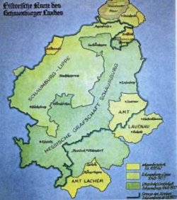

Getrennte Entwicklung in Schaumburg nach 1647 - Grafschaft Schaumburg lippischen Anteils/Schaumburg-Lippe
Historische Karte des Schaumburger Landes
Zeichnung von Christian Moritz, Staatsarchiv Bückeburg
Eine andere Entwicklung nahm der lippische Teil Schaumburgs, der das Glück hatte, einige tüchtige Regenten hervorzubringen, die sich ganz dem Wohle ihres kleinen Landes widmeten. Zu den bedeutendsten und berühmtesten unter ihnen gehört Graf Wilhelm (reg. 1748-1777), der von König Ludwig I. von Bayern für wert befunden wurde, in der Ehrengalerie der Walhalla mit einer Büste unter die großen Deutschen eingereiht zu werden. In London geboren, nach zeitweiligem Aufenthalt in Genf und dem Studium in Leiden und Montpellier hatte er in österreichischen Heeresdiensten Italien kennengelernt. Als Feldmarschall in braunschweig-lüneburgisch / britischen Diensten kämpfte er im Siebenjährigen Krieg erfolgreich in der Schlacht bei Minden 1759 und sicherte die Selbständigkeit Portugals gegen Frankreich und Spanien 1762. Nach den von ihm selbst angestellten, neuen militär-theoretischen Konzepten baute er sein eigenes Land so aus, dass es sich im Kriegsfalle verteidigen ließ. So führte er als erster die allgemeine Wehrpflicht ein und baute die Festung Wilhelmstein im Steinhuder Meer. Die Kriegsschule, die er auf dem Wilhelmstein einrichtete, brachte den preußischen Heeresreformer Gerhard Scharnhorst hervor. Er förderte die Landwirtschaft und das Gewerbe seines Landes; er legte Kolonistendörfer an, verbesserte das Schulwesen und pflegte einen schriftlichen Gedankenaustausch mit Leuten wie Friedrich II. von Preußen, Voltaire, Mendelssohn, Möser und Gleim; an seinem Hof zog er den Universalgelehrten Johann Gottfried Herder (1771-1776 Konsistorialrat in Bückeburg), den Philosophen Thomas Abbt und den "Concertmeister" Johann Christoph Friedrich Bach, den "Bückeburger Bach" (1750-1795 in Bückeburg). Wilhelms Grabmal, eine Pyramide mit freimaurerischen Symbolen, ließ er entgegen der Familientradition mitten im Schaumburger Wald anlegen.Zeichnung von Christian Moritz, Staatsarchiv Bückeburg
In der politischen Praxis des 18. Jahrhunderts entwickelte sich der lippische Anteil der Grafschaft Schaumburg mit der Residenz Bückeburg zur selbständigen Grafschaft Schaumburg-Lippe. Nach dem Ende des Alten Reichs (1806) erfuhr das Ländchen sogar eine Rangerhöhung, als sein Regent Georg Wilhelm 1807 in eigener Initiative den Fürstentitel annahm: Aus der Grafschaft wurde nunmehr das Fürstentum Schaumburg-Lippe, das die volle Souveränität beanspruchte.
Unter Fürst Georg Wilhelm (1807-1860) wurde nach den verheerenden napoleonischen Kriegen die wirtschaftliche Entwicklung des Landes gezielt gefördert. Die Verkehrsverbindungen wurden erheblich vereinfacht, als im Jahre 1847 die Bahnlinie (Dortmund -) Minden - Hannover (- Berlin) eröffnet wurde und 1854 Schaumburg-Lippe dem preußischen Zollgebiet beitrat. Die Landwirtschaft blieb trotz der Industrialisierung ein wichtiger Faktor. Sie wurde durch die Ablösung von Diensten beziehungsweise Abgaben und durch die Teilung der Gemeinheiten von Fesseln befreit. All das führte zu einem Modernisierungsschub wie nie zuvor. Der Bergbau und die Glasindustrie im kurhessischen Obernkirchen strahlten weit ins Fürstentum Schaumburg-Lippe hinein. Mit Einrichtung des Georgschachts bei Stadthagen wurde der Höhepunkt des Schaumburger Bergbaus erreicht, der auch im 20. Jahrhundert blühte, bis er im Jahre 1961 abrupt zu Ende ging. Daneben boten der fürstliche Hof und landesherrliche Forsten vielen Beschäftigung.
Begünstigt wurde die Industrialisierung Schaumburgs durch die relativ hohe Bevölkerungsdichte, die vorhandenen Bodenschätze (Kohle, Sandstein) und die günstige Verkehrslage (Eisenbahn, Weser, Mittellandkanal, Autobahn seit den 30er Jahren des 20. Jahrhunderts). So kam es in Schaumburg - nicht gleichmäßig verteilt, sondern mit unterschiedlicher Schwerpunkbildung - zu einem Nebeneinander von Landwirtschaft, Bergbau und Glasindustrie, nicht zuletzt auch Kleingewerbe (Korbflechter) und Wanderarbeit (Heringsfängerei). Industriestädte nach dem Muster des Ruhrgebiets oder des benachbarten Hannover (Linden) entstanden in Schaumburg nicht, vielmehr blieb die Siedlungsstruktur in Schaumburg dörflich-kleinstädtisch geprägt.
Anspruch und Realität des Fürstentums klafften im Laufe des 19. Jahrhunderts zunehmend auseinander. Zwar behielt Schaumburg-Lippe selbst 1866 seine Selbständigkeit, hinkte jedoch im Modernisierungsprozess hinter der allgemeinen Entwicklung her und musste von Preußen überall Hilfe annehmen, wo der Kleinstaat bei einer modernen Verwaltung überfordert war. Post und Justiz, Schul- und Medizinalwesen wurden nach und nach preußischen Aufsichtsbehörden unterstellt. Nachdem 1867 das Militärwesen ganz auf Preußen übergegangen war, wurde das 7. Westfälische Jägerbataillon von Kleve nach Bückeburg und Stadthagen verlegt; der Fürst zu Schaumburg-Lippe wurde zum Chef der "Bückeburger Jäger". In der politischen Diskussion wurde Schaumburg-Lippe seit etwa 1840 mehr und mehr zum sprichwörtlichen Objekt des Spottes gegen die unzeitgemäße Kleinstaaterei; er fand seinen bekanntesten Ausdruck im "Duodez" des Hermann Löns, der von 1907 bis zu seiner Kündigung 1909 Schriftleiter der Schaumburg-Lippischen Landeszeitung in Bückeburg war.
Kurz vor dem Ende der Monarchie haben die Fürsten ihrer Residenz noch einige Glanzlichter aufgesetzt: Fürst Georg (1893-1911) - dessen Bruder Adolf mit der Kaisertochter Viktoria vermählt war und das "Palais Schaumburg" in Bonn bewohnte - ergänzte das Schloss im neubarocken Stil und gestaltete den Schlosshof völlig neu, der seither rechts und links von zwei "Kavaliershäuschen" im wiederbelebten Stil der Weserrenaissance flankiert wird. Georgs Sohn Fürst Adolf (1911-1918) errichtete im Bückeburger Schlosspark ein Mausoleum, das in Größe und Ausstattung seinesgleichen sucht und in merkwürdigem Gegensatz zur tatsächlichen Bedeutung seines Fürstentums stand. Er ließ Bad Eilsen, das von der Fürstin Juliane (1761-1799) gegründet worden war, zu einem ansehnlichen Kurort ausbauen.
Als die Monarchie in Deutschland allgemein endete, verschwand mit der von außen erzwungenen Abdankung des Fürsten Adolf am 15. November 1918 auch das Fürstentum Schaumburg-Lippe; mit der SPD an der Spitze der politischen Parteien teilte der junge republikanische Freistaat das Schicksal der übrigen Länder bis 1945.
Zu Ende ging auch eine Besonderheit der Konfessionsgeschichte: An der Spitze der evangelisch-lutherischen Landeskirche Schaumburg-Lippe stand bis dahin der Landesherr als oberster Bischof; das Herrscherhaus war jedoch reformierten Bekenntnisses. 1918 endete auch das Kirchenregiment eines reformierten Landesfürsten über eine lutherische Landeskirche. Sie hat sich bis heute als eine der kleinsten Landeskirchen Deutschlands selbständig erhalten.
Die Übergangslage zwischen Westfalen, zu dem Schaumburg bis zum Ende des Alten Reichs gehörte, und dem niedersächsischen Hannover, das schon immer eine starke Anziehungskraft entfaltete, ließ nach dem 2. Weltkrieg die Frage der Zugehörigkeit Schaumburg-Lippes noch einmal offen erscheinen, als die Länder Nordrhein-Westfalen und Niedersachsen neu gebildet wurden. Durch Entscheidung der Britischen Militärregierung ging das Land Schaumburg-Lippe im November 1946 zusammen mit den Ländern Braunschweig, Hannover und Oldenburg in das neugeschaffene Land Niedersachsen über. Aus dem ehemaligen Land wurde (nach Zusammenlegung der beiden Landkreise Bückeburg und Stadthagen 1948) nunmehr der Landkreis Schaumburg-Lippe gebildet. Der Sitz der neuen Kreisverwaltung wurde in Stadthagen eingerichtet.
Die Selbständigkeit des Landes hatte immer wieder zur Diskussion gestanden. Am 6. Juni 1926 entschied sich die Bevölkerung in einer Volksabstimmung mit einer klaren Mehrheit gegen den Anschluss an Preußen; am 24. Februar 1930 kam im Landtag die für den Anschluss erforderliche Zweidrittel-Mehrheit nicht zustande. Noch einmal wurde die Selbständigkeit 1975 zur Diskussion gestellt. In einer bundesweit beachteten Volksabstimmung votierte die Bevölkerung Schaumburg-Lippes für die Selbständigkeit. Sie wurde nicht gewährt. Wenn die Schaumburg-Lipper damit ihren Unwillen ausdrücken wollte dagegen, dass Niedersachsen das ehemalige Landesvermögen übernommen und nur zu einem kleinen Teil an den Kreis zurückgegeben hatte, dann war die Volksabstimmung ein Erfolg: Die Rückgabe des früheren Besitzes wurde erreicht.